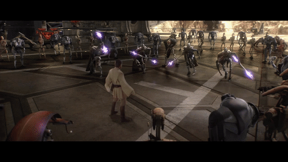
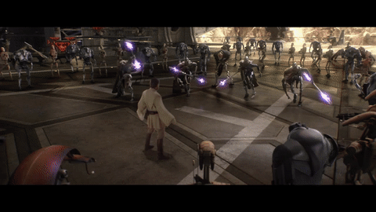

The lightsaber, also referred to as a laser sword or space sword by those who were unfamiliar with it, was a distinctive weapon, the very image of which was inextricably bound with the mythos of the Jedi Order and their polar opposites, the Sith. The lightsaber also became synonymous with the Jedi Order's values to uphold peace and justice throughout the galaxy. This perception endured, despite the many conflicts with lightsaber-wielding Sith and Dark Jedi.
The weapon consisted of a blade of pure plasma emitted from the hilt and suspended in a force containment field. The field contained the immense heat of the plasma, protecting the wielder, and allowed the blade to keep its shape. The hilt was almost always self-fabricated by the wielder to match his or her specific needs, preferences and style. The hilt was also built similarly to his or her master's lightsaber as a mark of respect. Due to the weightlessness of plasma and the strong gyroscopic effect generated by it, lightsabers required a great deal of strength and dexterity to wield, and it was extremely difficult—and dangerous—for the untrained to attempt using. However, in the hands of an expert of the Force, the lightsaber was a weapon to be greatly respected and feared. To wield a lightsaber was to demonstrate incredible skill and confidence, as well as masterful dexterity and attunement to the Force.
Lightsaber colors are determined by the force of the Jedi using a lightsaber. More specifically, as noted on the official Star Wars site, lightsabers come from Kyber crystals, typically found in the frozen caves in the world of Ilum, which acquire color once attuned to a specific Jedi. (There are exceptions, however: At some points, lightsaber crystals were replaced by Kunda stones. More significantly, Sith usually use red-hued synthetic crystals.)
Choose a color
 
